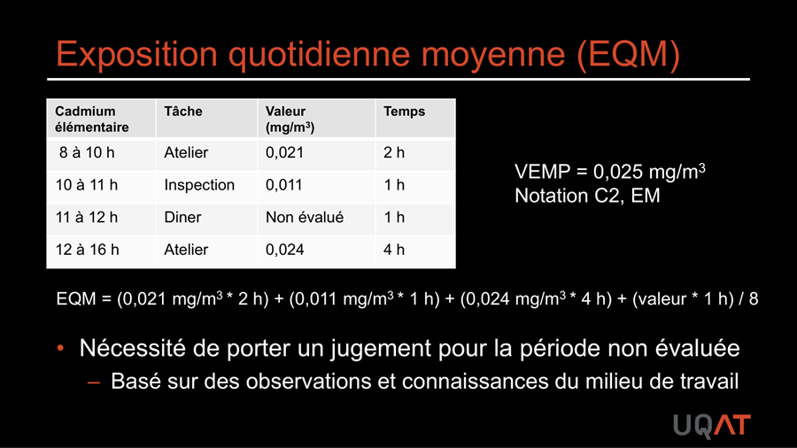
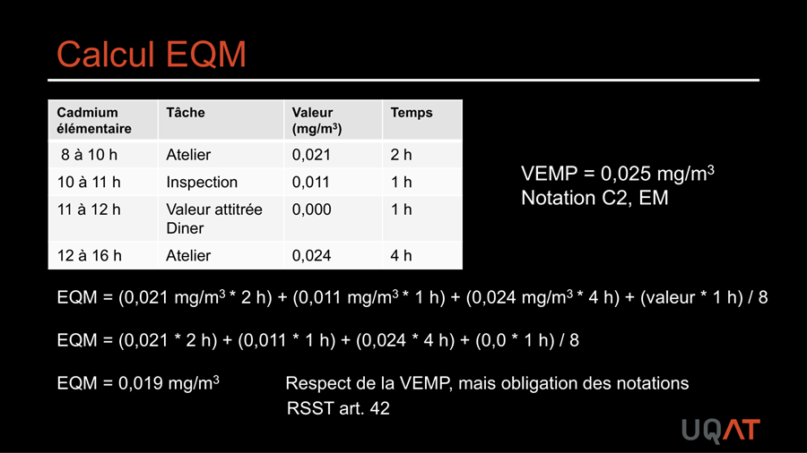
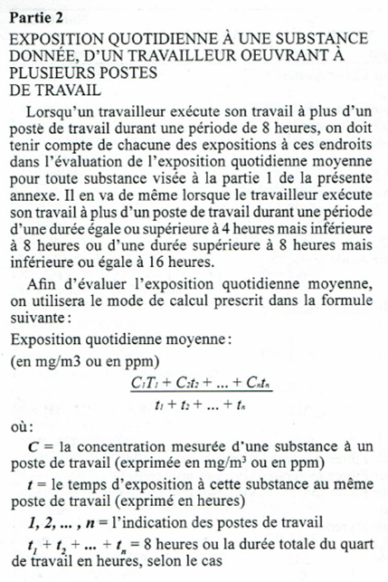
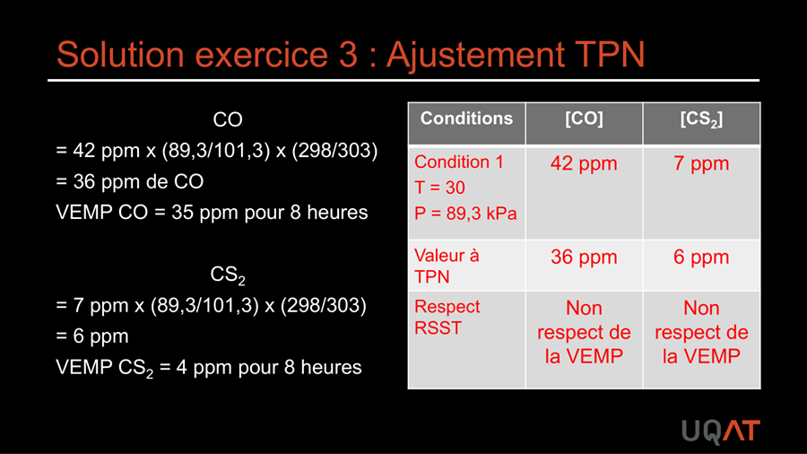
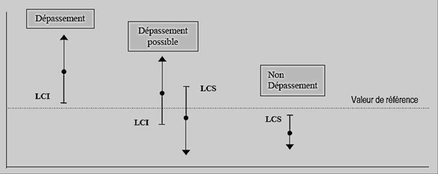
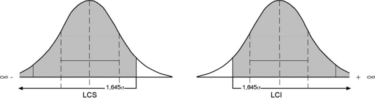
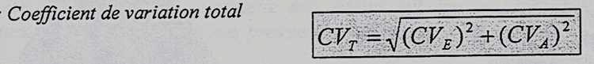
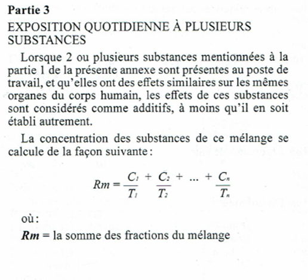
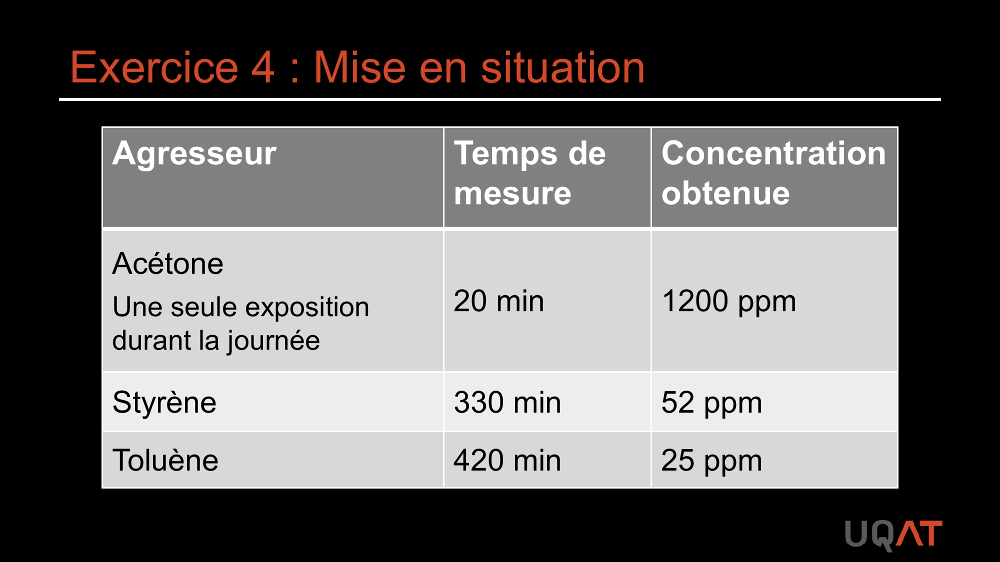

Calculs d'exposition et ajustements TPN
L'évaluation quantitative exige des calculs d'exposition quotidienne moyenne (EQM), des conversions d'unités, des ajustements aux conditions TPN et le calcul du ratio de mélange (RM) pour les expositions multiples. Les limites de confiance (LCI/LCS) à 95 % permettent de statuer sur le respect de la VEA. En mine, les quarts de 10 h ou 12 h imposent un ajustement VEMA systématique.
Table des matières
- Volume d'air échantillonné
- Exposition quotidienne moyenne
- Ajustement aux conditions TPN
- Limites de confiance
- Ratio de mélange
- Horaires non conventionnels
- Application terrain
Volume d'air échantillonné
$$V = Q_m \times T$$
- $Q_m$ : débit moyen de la pompe (L/min).
- $T$ : durée du prélèvement (min).
- Conversion : 1 m³ = 1000 L.
Exemple : pompe à 0,2 L/min pendant 720 min donne 144 L = 0,144 m³. Si le laboratoire retourne 2 mg dans 0,144 m³ : C = 13,9 mg/m³.
Exposition quotidienne moyenne
Pour plusieurs échantillons sur le quart
$$EQM = \frac{C_1 T_1 + C_2 T_2 + \cdots + C_n T_n}{T_{total}}$$
{kind=link}

Toucher l'image pour l'agrandir{kind=link}

Toucher l'image pour l'agrandirSi la VEA est sur 8 h et que le quart est plus long, ajuster (voir section Horaires non conventionnels). Pour des périodes non mesurées, on suppose souvent une concentration nulle (à justifier).
L'annexe I partie 2 du RSST encadre l'estimation d'exposition.
{kind=link}

Toucher l'image pour l'agrandirAjustement aux conditions TPN
TPN en hygiène du travail : T = 25 °C (298 K), P = 760 mmHg (101,3 kPa).
$$\text{ppm}{TPN} = \text{ppm}{ech} \times \frac{P_{ech}}{760} \times \frac{298}{T_{ech}(K)}$$
Exemple : 42 ppm de CO mesurés à T = 30 °C (303 K), P = 89,3 kPa.
$$42 \times \frac{89{,}3}{101{,}3} \times \frac{298}{303} = 36 \text{ ppm}$$
VEMP du CO = 35 ppm donc non-respect (de peu).
{kind=link}

Toucher l'image pour l'agrandirOutil : utilitaire IRSST de conversion des VEA exprimées en ppm.
Limites de confiance
Le résultat brut d'un échantillon est entaché d'incertitude (sources : échantillonnage, analyse). On compare donc la VEA aux limites de confiance, pas à la valeur ponctuelle.
{kind=link}

Toucher l'image pour l'agrandirPour statuer avec une confiance de 95 % sur le dépassement
$$LCI_{95%} = X - X \times 1{,}645 \times CV_T$$
$$LCS_{95%} = X + X \times 1{,}645 \times CV_T$$
où $CV_T = \sqrt{CV_E^2 + CV_A^2}$ avec
- $CV_E$ : coefficient de variation échantillonnage (typiquement 5 %),
- $CV_A$ : coefficient de variation analytique (Guide IRSST T-06 ou NIOSH).
{kind=link}

Toucher l'image pour l'agrandir{kind=link}

Toucher l'image pour l'agrandirInterprétation
| Cas | Conclusion |
|---|---|
| LCS < VEA | Non-dépassement (95 %) |
| LCI > VEA | Dépassement (95 %) |
| LCI < VEA < LCS | Zone d'incertitude, dépassement possible |
 Toucher l'image pour l'agrandir
Toucher l'image pour l'agrandir
Ratio de mélange
Pour exposition simultanée à plusieurs substances ayant des effets sur les mêmes organes cibles (RSST annexe I, partie 3)
$$RM = \frac{C_1}{VEMP_1} + \frac{C_2}{VEMP_2} + \cdots + \frac{C_n}{VEMP_n}$$
Si RM > 1 : non-respect du RSST.
{kind=link}

Toucher l'image pour l'agrandirExemple : Pb élémentaire 0,025 mg/m³ (VEMP 0,05) + Hg vapeur 0,013 mg/m³ (VEMP 0,025)
$$RM = \frac{0{,}025}{0{,}05} + \frac{0{,}013}{0{,}025} = 0{,}5 + 0{,}52 = 1{,}02$$
Donc non-respect (RM > 1). Outil IRSST : MIXIE.
Exemple d'application en atelier de fibre de verre.
{kind=link}

Toucher l'image pour l'agrandirHoraires non conventionnels
Pour quarts différents de 8 h/jour, 40 h/sem : utiliser la VEMA, voir VEA et normes RSST.
- Catégorie selon profil d'effet (aigu, chronique, hebdomadaire).
- Référence : Guide d'ajustement des valeurs d'exposition admissibles pour les horaires de travail non conventionnels, IRSST.
- Utilitaire en ligne IRSST.
Aussi vérifier
- Respect de la VECD (max 4 fois/jour, 15 min, intervalle 60 min).
- Limites d'excursion (3x VEMP max 30 min, 5x VEMP jamais) lorsque pas de VECD.
Application terrain
Pratique courante en site minier
- Quart de 12 h ou 10 h : appliquer systématiquement la VEMA via le guide IRSST.
- Mesure souterraine : ajustement TPN requis (P plus élevée en profondeur, T parfois plus élevée).
- Mélanges complexes (CO + NO2 + DPM) : appliquer le RM pour cibles communes (système respiratoire ou cardiovasculaire).
- Exposition cyclique au sautage : prendre en compte la VECD en plus de la VEMP.
Exemple en mine souterraine : pour une concentration de CO mesurée à 850 m de profondeur, la pression atmosphérique peut atteindre 110-115 kPa selon le profil de ventilation, ce qui modifie significativement le résultat exprimé en ppm.
Ressources
| Document | Type | Source |
|---|---|---|
| Guide d'ajustement des VEA | Guide | IRSST |
| Utilitaire d'ajustement | Outil en ligne | IRSST |
| MIXIE | Outil de calcul de mélanges | IRSST |
| Guide T-06 | Guide technique | IRSST |
Articles wiki connexes
Pages qui pointent ici (11)
- 🎯 Démarrage rapide, conseiller SST Hygiène industrielle
- 🏠 Wiki Hygiène industrielle, mines Hygiène industrielle
- Agresseurs chimiques Hygiène industrielle
- Bruit en milieu de travail Hygiène industrielle
- Démarche AREC Hygiène industrielle
- Démarche en hygiène industrielle Hygiène industrielle
- Évaluation et mesure Hygiène industrielle
- Gaz et vapeurs Hygiène industrielle
- Protection respiratoire (APR) Hygiène industrielle
- TPN Recueil législatif
- VEA et normes RSST Hygiène industrielle